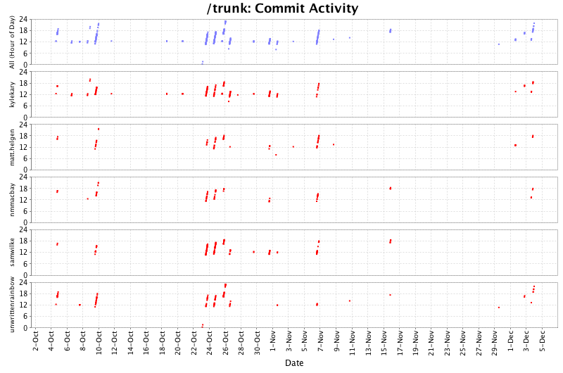
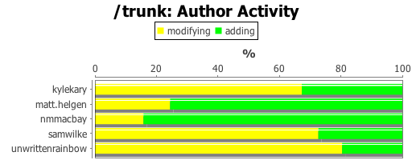
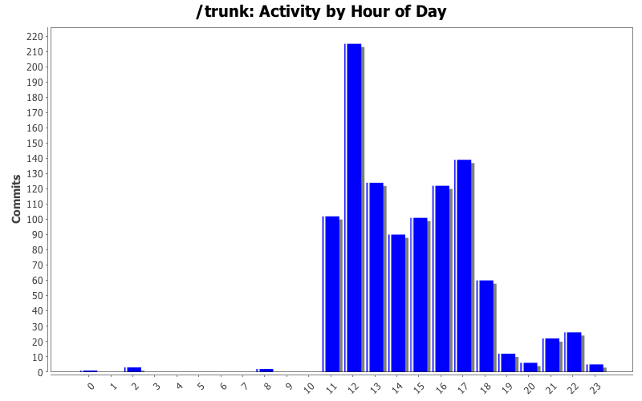

Lines of Code

| Author | Author Id | Changes | Lines of Code | Lines per Change |
|---|---|---|---|---|
| Totals | 1030 (100.0%) | 28296 (100.0%) | 27.4 | |
| nmmacbay | nmmacbay | 178 (17.3%) | 9328 (33.0%) | 52.4 |
| samwilke | samwilke | 270 (26.2%) | 7381 (26.1%) | 27.3 |
| unwrittenrainbow | unwrittenrainbow | 233 (22.6%) | 4916 (17.4%) | 21.0 |
| kylekary | kylekary | 200 (19.4%) | 4534 (16.0%) | 22.6 |
| matt.helgen | matt.helgen | 149 (14.5%) | 2137 (7.6%) | 14.3 |
| Author | Up to 12/2009 | 1/2010 | 2/2010 | 3/2010 | 4/2010 | 5/2010 | 6/2010 | 7/2010 | 8/2010 | 9/2010 | 10/2010 | 11/2010 | 12/2010 |
|---|---|---|---|---|---|---|---|---|---|---|---|---|---|
| Totals | 0 (-) | 0 (-) | 0 (-) | 0 (-) | 0 (-) | 0 (-) | 0 (-) | 0 (-) | 0 (-) | 0 (-) | 23628 (100.0%) | 4202 (100.0%) | 466 (100.0%) |
| nmmacbay | 0 (-) | 0 (-) | 0 (-) | 0 (-) | 0 (-) | 0 (-) | 0 (-) | 0 (-) | 0 (-) | 0 (-) | 7811 (33.1%) | 1483 (35.3%) | 34 (7.3%) |
| samwilke | 0 (-) | 0 (-) | 0 (-) | 0 (-) | 0 (-) | 0 (-) | 0 (-) | 0 (-) | 0 (-) | 0 (-) | 6414 (27.1%) | 967 (23.0%) | 0 (0.0%) |
| unwrittenrainbow | 0 (-) | 0 (-) | 0 (-) | 0 (-) | 0 (-) | 0 (-) | 0 (-) | 0 (-) | 0 (-) | 0 (-) | 4619 (19.5%) | 118 (2.8%) | 179 (38.4%) |
| kylekary | 0 (-) | 0 (-) | 0 (-) | 0 (-) | 0 (-) | 0 (-) | 0 (-) | 0 (-) | 0 (-) | 0 (-) | 3419 (14.5%) | 999 (23.8%) | 116 (24.9%) |
| matt.helgen | 0 (-) | 0 (-) | 0 (-) | 0 (-) | 0 (-) | 0 (-) | 0 (-) | 0 (-) | 0 (-) | 0 (-) | 1365 (5.8%) | 635 (15.1%) | 137 (29.4%) |
| Month | Author | Lines | Tweet This |
|---|---|---|---|
| December 2010 | unwrittenrainbow | 179 |  |
| November 2010 | nmmacbay | 1483 | |
| October 2010 | nmmacbay | 7811 | |


